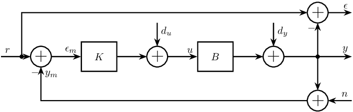
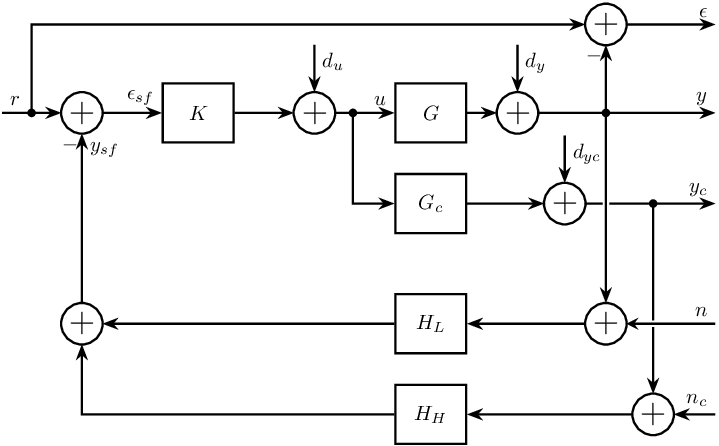
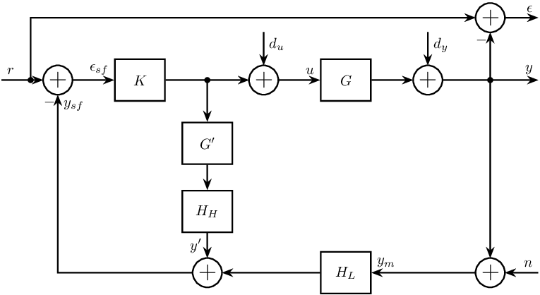
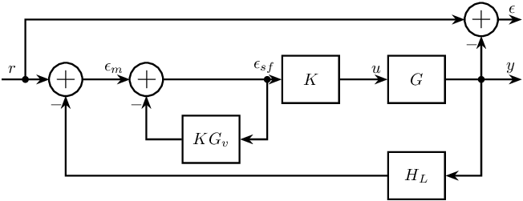
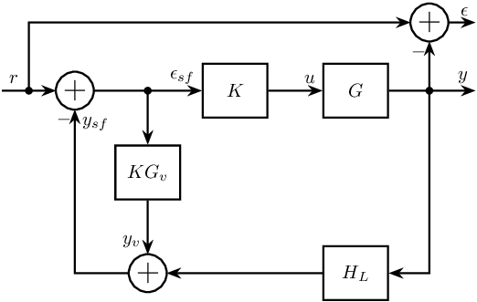
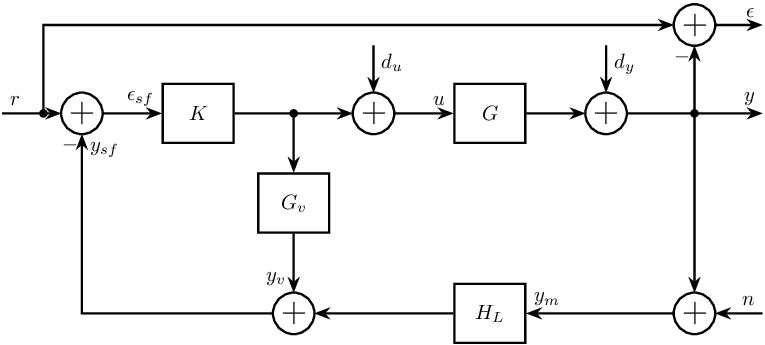

Test
Table of Contents
1 Classical Feedback
\begin{tikzpicture} \node[addb={+}{}{}{}{-}] (addfb) at (0, 0){}; \node[block, right=1 of addfb] (K){$K$}; \node[addb={+}{}{}{}{}, right=1 of K] (adddu){}; \node[block, right=1 of adddu] (G){$B$}; \node[addb={+}{}{}{}{}, right=1 of G] (adddy){}; \node[addb={+}{}{}{}{-}, above right=1 and 1 of adddy] (adderror) {}; \node[addb={+}{}{}{}{}, below right=1 and 1 of adddy] (addn) {}; \draw[->] (addfb.east) -- (K.west) node[above left]{$\epsilon_{m}$}; \draw[->] (K.east) -- (adddu.west); \draw[->] (adddu.east) -- (G.west) node[above left]{$u$}; \draw[->] (adderror.east) -- ++(0.8, 0) coordinate[](endpos) node[above left]{$\epsilon$}; \draw[->] (G.east) -- (adddy.west); \draw[->] (adddy.east) -- (G-|endpos) node[above left]{$y$}; \draw[<-] (addfb.west) -- ++(-1, 0) node[above right]{$r$}; \draw[->] (G-|adderror) node[branch]{} -- (addn.north); \draw[<-] (addn.east) -- (addn-|endpos) node[above left]{$n$}; \draw[->] (G-|adderror) -- (adderror.south); \draw[->] ($(addfb.west)+(-0.3, 0)$) node[branch]{} |- (adderror.west); \draw[->] (addn.west) -| (addfb.south) node[below right]{$y_m$}; \draw[<-] (adddu.north) -- ++(0, 0.8) node[below right]{$d_u$}; \draw[<-] (adddy.north) -- ++(0, 0.8) node[below right]{$d_u$}; \end{tikzpicture}

2 Sensor Fusion Architecture
\begin{tikzpicture} \node[addb={+}{}{}{}{-}] (addfb) at (0, 0){}; \node[block, right=1 of addfb] (K){$K$}; \node[addb={+}{}{}{}{}, right=1 of K] (adddu){}; \node[block, right=1 of adddu] (G){$G$}; \node[block, below=0.5 of G] (Gc){$G_c$}; \node[addb={+}{}{}{}{}, right=0.5 of G] (adddy){}; \node[addb={+}{}{}{}{}, right=1.3 of Gc] (adddyc){}; \node[block, below=1 of Gc] (Hl){$H_L$}; \node[block, below=0.5 of Hl] (Hh){$H_H$}; \node[addb={+}{}{}{}{}] (addsf) at (Hl-|addfb) {}; \node[addb={+}{}{}{}{-}, above right=1 and 1 of adddy] (adderror) {}; \node[addb={+}{}{}{}{}] (addn) at (Hl-|adderror) {}; \node[addb={+}{}{}{}{}] (addnc) at ($(Hh-|adderror)+(0.8, 0)$) {}; \draw[<-] (addfb.west) -- ++(-1, 0) node[above right]{$r$}; \draw[->] (addfb.east) -- (K.west) node[above left]{$\epsilon_{sf}$}; \draw[->] (K.east) -- (adddu.west); \draw[->] (adddu.east) -- (G.west) node[above left]{$u$}; \draw[->] ($(adddu.east)+(0.3, 0)$) node[branch]{} |- (Gc.west); \draw[->] (adderror.east) -- ++(1.5, 0) coordinate[](endpos) node[above left]{$\epsilon$}; \draw[->] (G.east) -- (adddy.west); \draw[->] (Gc.east) -- (adddyc.west); \draw[->] (adddy.east) -- (G-|endpos) node[above left]{$y$}; \draw[->] (adddyc.east) -- (Gc-|endpos) node[above left]{$y_c$}; \draw[->] (Hl.west) -- (addsf.east); \draw[->] (Hh.west) -| (addsf.south); \draw[->] (addsf.north) -- (addfb.south) node[below right]{$y_{sf}$}; \draw[->top] (G-|addn) node[branch]{} -- (addn.north); \draw[->] (Gc-|addnc) node[branch]{} -- (addnc.north); \draw[->] (addn.west) -- (Hl); \draw[->] (addnc.west) -- (Hh); \draw[->] (G-|adderror) -- (adderror.south); \draw[->] ($(addfb.west)+(-0.5, 0)$) node[branch]{} |- (adderror.west); \draw[<-] (adddu.north) -- ++(0, 0.8) node[below right]{$d_u$}; \draw[<-] (adddy.north) -- ++(0, 0.8) node[below right]{$d_y$}; \draw[<-] (adddyc.north) -- ++(0, 0.8) node[below right]{$d_{yc}$}; \draw[<-top] (addn.east) -- (addn-|endpos) node[above left]{$n$}; \draw[<-] (addnc.east) -- (addnc-|endpos) node[above left]{$n_c$}; \end{tikzpicture}

3 Complementary Filters
\begin{tikzpicture} \node[addb={+}{}{}{}{-}] (addfb) at (0, 0){}; \node[block, right=1 of addfb] (K){$K$}; \node[addb={+}{}{}{}{}, right=2 of K] (adddu){}; \node[block, right=1 of adddu] (G){$G$}; \node[addb={+}{}{}{}{}, right=1 of G] (adddy){}; \coordinate[] (KG) at ($0.5*(K.east)+0.5*(adddu.west)$); \node[block, below=1 of KG] (Gm){$G^\prime$}; \node[block, , below=0.6 of Gm] (Hh){$H_H$}; \node[addb={+}{}{}{}{}, below=0.6 of Hh] (addsf){}; \node[block] (Hl) at (addsf-|G) {$H_L$}; \node[addb={+}{}{}{}{-}, above right=1 and 1 of adddy] (adderror) {}; \node[addb={+}{}{}{}{}] (addn) at (Hl-|adderror) {}; \draw[->] (addfb.east) -- (K.west) node[above left]{$\epsilon_{sf}$}; \draw[->] (K.east) -- (adddu.west); \draw[->] (adddu.east) -- (G.west) node[above left]{$u$}; \draw[->] (KG) node[branch]{} -- (Gm.north); \draw[->] (Gm.south) -- (Hh.north); \draw[->] (Hh.south) -- (addsf.north) node[above left]{$y^\prime$}; \draw[->] (Hl.west) -- (addsf.east); \draw[->] (addsf.west) -| (addfb.south) node[below right]{$y_{sf}$}; \draw[->] (adderror.east) -- ++(0.8, 0) coordinate[](endpos) node[above left]{$\epsilon$}; \draw[->] (G.east) -- (adddy.west); \draw[->] (adddy.east) -- (G-|endpos) node[above left]{$y$}; \draw[<-] (addfb.west) -- ++(-1, 0) node[above right]{$r$}; \draw[->] (G-|adderror) node[branch]{} -- (addn.north); \draw[<-] (addn.east) -- (addn-|endpos) node[above left]{$n$}; \draw[->] (addn.west) -- (Hl.east) node[above right]{$y_m$}; \draw[->] (G-|adderror) -- (adderror.south); \draw[->] ($(addfb.west)+(-0.3, 0)$) node[branch]{} |- (adderror.west); \draw[<-] (adddu.north) -- ++(0, 0.8) node[below right]{$d_u$}; \draw[<-] (adddy.north) -- ++(0, 0.8) node[below right]{$d_y$}; \end{tikzpicture}

4 Equivalent Configuration
\begin{tikzpicture} \node[addb={+}{}{}{}{-}] (addfb) at (0, 0){}; \node[addb={+}{}{}{}{-}, right=1 of addfb] (addsf){}; \node[block, below right=0.5 and 0.5 of addsf] (Ke){$KG_v$}; \node[block, right=2.5 of addsf] (K){$K$}; \node[block, right=1 of K] (G){$G$}; \node[block, below=1 of G] (Hl){$H_L$}; \node[addb={+}{}{}{}{-}, above right=0.5 and 0.5 of G] (adderror) {}; \draw[->] (addfb.east) -- (addsf.west) node[above left]{$\epsilon_{m}$}; \draw[->] (addsf.east) -- (K.west) node[above left]{$\epsilon_{sf}$}; \draw[->] (K.east) -- (G.west) node[above left]{$u$}; \draw[->] ($(K.west)+(-0.3, 0)$) node[branch]{} |- (Ke.east); \draw[->] (Ke.west) -| (addsf.south); \draw[->] (Hl.west) -| (addfb.south); \draw[->] (adderror.east) -- ++(0.5, 0) coordinate[](endpos) node[above left]{$\epsilon$}; \draw[->] (G.east) -- (G-|endpos) node[above left]{$y$}; \draw[<-] (addfb.west) -- ++(-1, 0) node[above right]{$r$}; \draw[->] (G-|adderror) node[branch]{} |- (Hl.east); \draw[->] (G-|adderror) -- (adderror.south); \draw[->] ($(addfb.west)+(-0.5, 0)$) node[branch]{} |- (adderror.west); \end{tikzpicture}

5 Sf Error
\begin{tikzpicture} \node[addb={+}{}{}{}{-}] (addfb) at (0, 0){}; \node[block, right=2 of addfb] (K){$K$}; \node[block, right=1 of K] (G){$G$}; \coordinate[] (KG) at ($0.5*(addfb.east)+0.5*(K.west)$); \node[block, below=1 of KG] (Gv){$KG_v$}; \node[addb={+}{}{}{}{}, below=1 of Gv] (addsf){}; \node[block] (Hl) at (addsf-|G) {$H_L$}; \node[addb={+}{}{}{}{-}, above right=0.5 and 0.5 of G] (adderror) {}; \draw[->] (addfb.east) -- (K.west) node[above left]{$\epsilon_{sf}$}; \draw[->] (K.east) -- (G.west) node[above left]{$u$}; \draw[->] (KG) node[branch]{} -- (Gv.north); \draw[->] (Gv.south) -- (addsf.north) node[above left]{$y_v$}; \draw[->] (Hl.west) -- (addsf.east); \draw[->] (addsf.west) -| (addfb.south) node[below right]{$y_{sf}$}; \draw[->] (adderror.east) -- ++(0.5, 0) coordinate[](endpos) node[above left]{$\epsilon$}; \draw[->] (G.east) -- (G-|endpos) node[above left]{$y$}; \draw[<-] (addfb.west) -- ++(-1, 0) node[above right]{$r$}; \draw[->] (G-|adderror) node[branch]{} |- (Hl.east); \draw[->] (G-|adderror) -- (adderror.south); \draw[->] ($(addfb.west)+(-0.5, 0)$) node[branch]{} |- (adderror.west); \end{tikzpicture}

6 Virtual Sensor Fusion
\begin{tikzpicture} \node[addb={+}{}{}{}{-}] (addfb) at (0, 0){}; \node[block, right=1 of addfb] (K){$K$}; \node[addb={+}{}{}{}{}, right=2 of K] (adddu){}; \node[block, right=1 of adddu] (G){$G$}; \node[addb={+}{}{}{}{}, right=1 of G] (adddy){}; \coordinate[] (KG) at ($0.5*(K.east)+0.5*(adddu.west)$); \node[block, below=1 of KG] (Gv){$G_v$}; \node[addb={+}{}{}{}{}, below=1 of Gv] (addsf){}; \node[block] (Hl) at (addsf-|G) {$H_L$}; \node[addb={+}{}{}{}{-}, above right=1 and 1 of adddy] (adderror) {}; \node[addb={+}{}{}{}{}] (addn) at (Hl-|adderror) {}; \draw[->] (addfb.east) -- (K.west) node[above left]{$\epsilon_{sf}$}; \draw[->] (K.east) -- (adddu.west); \draw[->] (adddu.east) -- (G.west) node[above left]{$u$}; \draw[->] (KG) node[branch]{} -- (Gv.north); \draw[->] (Gv.south) -- (addsf.north) node[above left]{$y_v$}; \draw[->] (Hl.west) -- (addsf.east); \draw[->] (addsf.west) -| (addfb.south) node[below right]{$y_{sf}$}; \draw[->] (adderror.east) -- ++(0.8, 0) coordinate[](endpos) node[above left]{$\epsilon$}; \draw[->] (G.east) -- (adddy.west); \draw[->] (adddy.east) -- (G-|endpos) node[above left]{$y$}; \draw[<-] (addfb.west) -- ++(-1, 0) node[above right]{$r$}; \draw[->] (G-|adderror) node[branch]{} -- (addn.north); \draw[<-] (addn.east) -- (addn-|endpos) node[above left]{$n$}; \draw[->] (addn.west) -- (Hl.east) node[above right]{$y_m$}; \draw[->] (G-|adderror) -- (adderror.south); \draw[->] ($(addfb.west)+(-0.3, 0)$) node[branch]{} |- (adderror.west); \draw[<-] (adddu.north) -- ++(0, 0.8) node[below right]{$d_u$}; \draw[<-] (adddy.north) -- ++(0, 0.8) node[below right]{$d_y$}; \end{tikzpicture}
